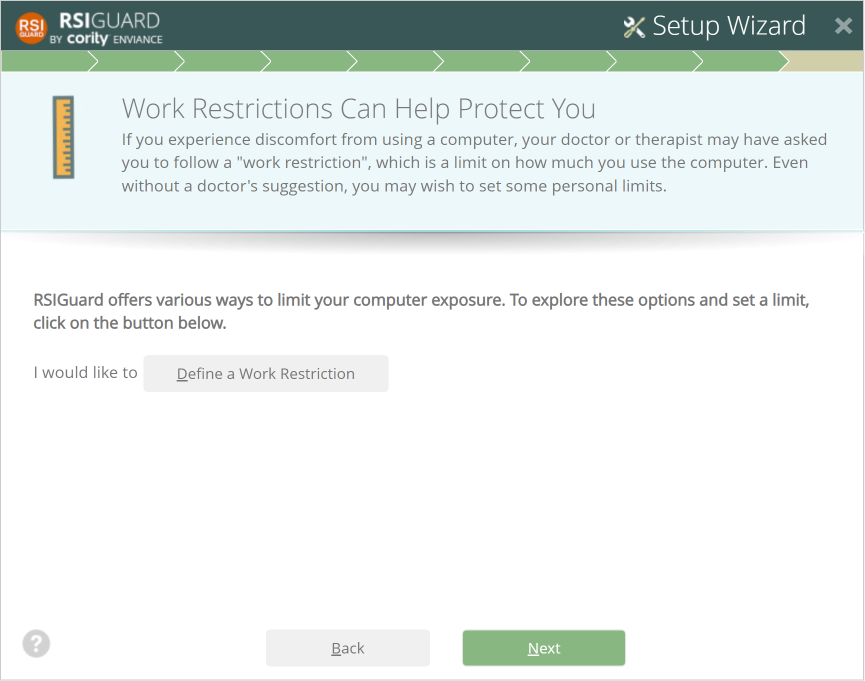
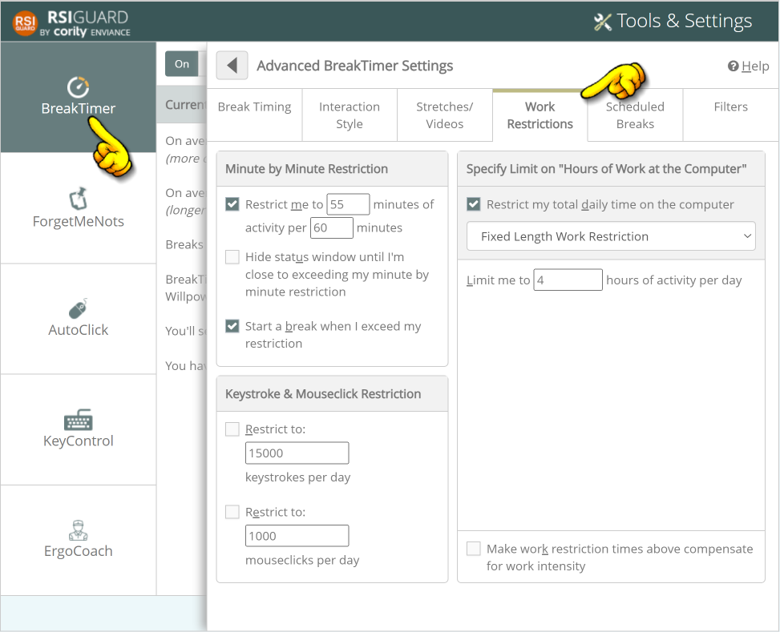

If you are under medical care, your doctor may have prescribed some limits on how much you can use the computer. Work restrictions can help you stay within these limits.
However, even if you haven't been given a restriction, many RSIGuard users want to set personal limits to manage or prevent discomfort.
Explore the variety of options shown in Define a Work Restriction to see if you'd like to set up a personal limit.

Note: This Work Restrictions Wizard page will only show up if you specified earlier that you experience discomfort at the computer. So if you don't see this page and want to configure a restriction, you can do so later in the BreakTimer settings:
